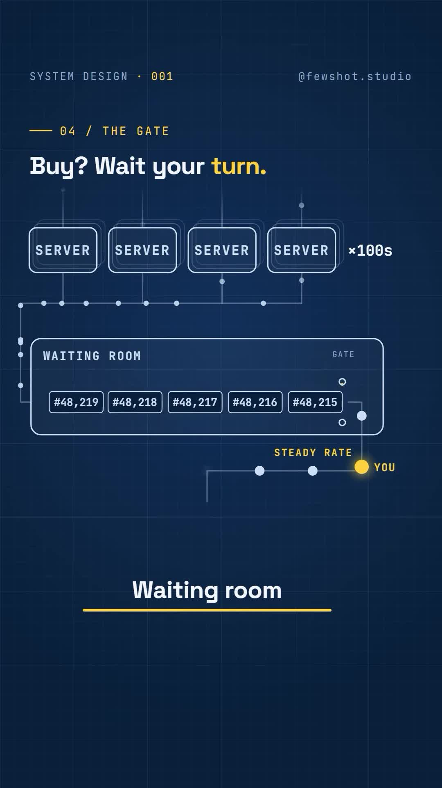
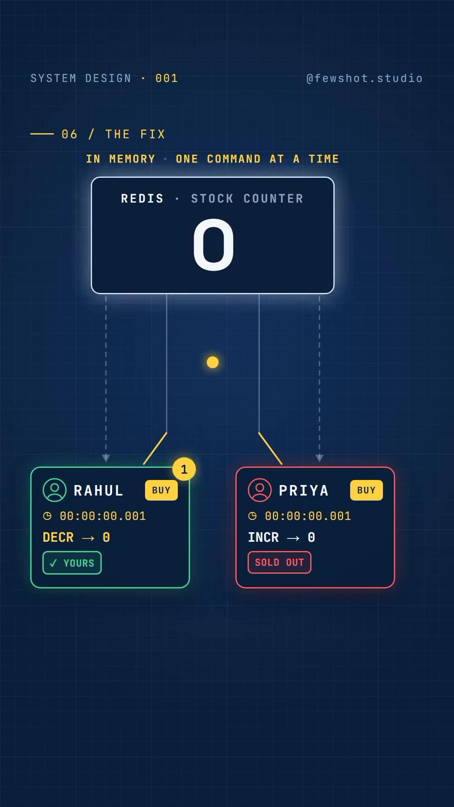
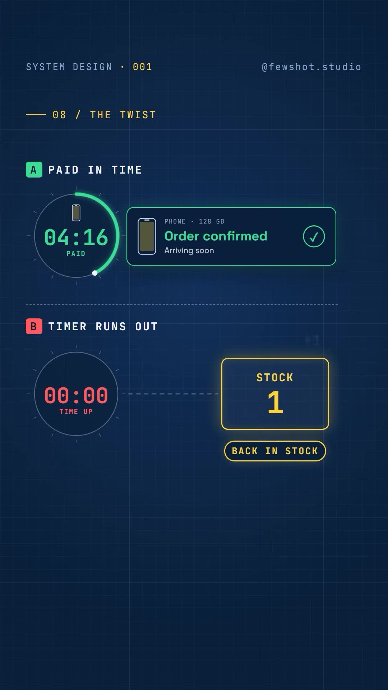
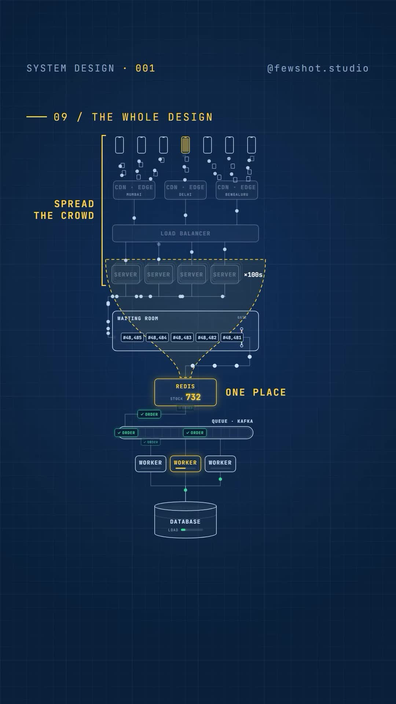

Executive Summary
At midnight during mega-sales events (such as Flipkart's Big Billion Days or Amazon's Prime Day), viral hardware discounts drop: 1,000 flagship smartphones are offered at massive markdowns. At exactly 12:00:00 AM, over 1,000,000 users click "Buy Now" in the exact same second, flooding checkout servers with 1.5 Million requests per second.
Meanwhile, a typical ACID-compliant relational order database (MySQL or PostgreSQL) can safely process approximately 2,000 writes per second without locking up. This creates a severe 750X throughput mismatch. Furthermore, naive database inventory checks trigger fatal race conditions where thousands of orders are accepted for items that do not exist—forcing painful public apologies and regulatory scrutiny.
In this end-to-end system design breakdown, Fewshot Studio deconstructs the enterprise architecture used to eliminate race conditions, achieve zero overselling, and protect the core transactional database through a 5-tier defense.
Core Visual Demonstrations




The Failure Mechanism: Why Naive SQL Fails
In standard e-commerce applications, inventory verification follows a read-then-write pattern:
-- Step 1: Read stock
SELECT stock FROM inventory WHERE product_id = 'iphone_15';
-- Step 2: If stock > 0, decrement
UPDATE inventory SET stock = stock - 1 WHERE product_id = 'iphone_15';
When only 1 phone remains in stock, users Rahul and Priya tap "Buy" at the identical millisecond ($T=0.001\text{s}$). Both requests read stock = 1 in parallel before either has executed the update. Both proceed to execute stock - 1. Two customers receive confirmation for a single physical unit.
The 5-Tier Production Architecture
1. Edge CDN Shielding (Traffic Deflection)
All static marketing graphics, product specifications, pricing labels, and JavaScript bundles are served directly from global Edge CDNs. Zero static traffic reaches backend application servers.
2. Virtual Waiting Room (Token Gate)
Instead of allowing 1,500,000 checkout requests to hammer application gateways simultaneously, incoming users enter an edge-hosted Virtual Waiting Room (using Cloudflare Waiting Room or AWS API Gateway usage plans). A token-bucket algorithm admits only the maximum transaction volume the downstream system can safely handle (e.g., 2,500 users every 2 seconds).
3. Atomic In-Memory Reservation (Redis + Lua Script)
The physical database is never queried during the initial click. Instead, the current available inventory counter is stored in a Redis Cluster.
Because Redis executes commands on a single-threaded event loop, reading and decrementing can be executed as a single atomic transaction using an embedded Lua script:
-- Redis Lua Script: atomic_reserve.lua
local key = KEYS[1]
local current_stock = tonumber(redis.call('GET', key) or 0)
if current_stock > 0 then
redis.call('DECR', key)
return 1 -- Reservation Successful!
else
return 0 -- Sold Out!
endThe first 1,000 requests decrement the counter down to 0 in microseconds. The 1,001st request evaluates to 0 and is immediately rejected with a clean "Sold Out" message in under 1 millisecond, without ever waking up the relational database!
4. Asynchronous Order Ingestion via Apache Kafka
The 1,000 users who secure a successful Redis reservation are not directed to write synchronously to the relational database.
Instead, an OrderCreatedEvent is published to an Apache Kafka partition. Downstream order-worker consumer microservices read from Kafka at a smooth, constant rate of 500 writes/sec, generating the final database records, initializing invoices, and creating payment sessions safely.
5. The 10-Minute Lease & Compensating Rollback
A reservation is not a permanent sale. The user is granted a 10-minute payment countdown lease:
- Success Path: User completes payment through Stripe/Razorpay. The payment gateway webhook fires, marking the order as
CONFIRMED. - Failure / Timeout Path: If the user closes the tab, declines the OTP, or the 10-minute timer expires, the background reconciler triggers a compensating transaction:
-- Release stock back into circulation
INCR stock:iphone_15The unit is released back into the live inventory pool, instantly allowing a waiting user in the queue to purchase it.